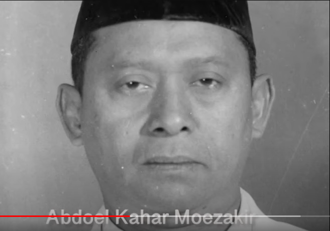

short_textPendahuluan
spaPancasila Lahir Sebagai Buah Pemikiran Tokoh Bangsa
Pancasila sebagai dasar negara indonesia lahir sebagai buah pemikiran tokoh bangsa. Disarikan dari kebudayaan dan tradisi leluhur nenek moyang bangsa indonesia.
Pancasila berasal dari bahasa sanksekerta yaitu oanca berartilima dan sila berarti dasar dan asas.
Sejarah perumusan pancasila merupakan bagian panjang perjuangan bangsa indonesia dalam meraih kemerdekaan.
Pada penghujung 1944 bala tentara jepang semakin terdesak oleh pasukan sekutu, akibat rentetan kekalahan diperang asia timur raya.
menyadari hal itu pemerintah jepang mengambil langkah darurat sesegera mungkin terhadap wilayah-wilayah kependudukan jepang, salah satunya Indonesia.
short_textBadan Penyidik Usaha Pelaksanaan Kemerdekaan
Pada 1 maret 1945 Jendral Pemerintahan Jepang yang membawahi jawa mengumumkan bahwa akan dibentuk satu badan baru dengan nama Badan Penyidik Usaha Persiapan Kemerdekaan Indonesia (BPUPKI).Diketuai oleh Dr. K.R.T Radjiman Wedioningrat dan beranggotakan 67 orang.
BPUPKI menggelar sidang pertamanya digedung Pancasila,pada tanggal 29 mei sampai 1 juni 1945. Sidang ini bertujuan membahas mengenai Dasar negara indonesia merdeka. Tercatat 3 orang tokoh memberikan pidatonya yaitu, M. Yamin, Soepomo dan Soekarno. Namun pidato M. Yamin dihari pertama dan Soepomo dihari ketiga belum menjelaskan secara tegas mengenai dasar negara.
Barulah pada tanggal 1 juni 1945 Sukarno berpidato mengenai dasar negara dan secara sistematis menjelaskan dasar negara yang dinamakan pancasila. Pidato ini disambut tepuk tangan meriah oleh peserta sidang sebagai tanda persetujuan mereka.
spaPanitia Sembilan & Piagam Jakarta

- 
Guna mematangkan rumusan dasar tersebut dibentuklah panitia kecil yang berjumlah 8 orang, kemudian dilanjutkan Panitia sembilan. Panitia ini terdiri dari Sukarno, M. Hatta, Achmad Soebarjo, M. Yamin, Wahid Hasyim, Abdul Kahar Muzakir, Abi Kusno Tjokrosoebarso, H. Agus Salim dan A.A Maramis.
Pada tanggal 22 juni 1945 lahirlah rumusan Negara Republik Indonesia yang dikenal sebagai Piagam Jakarta, yang pada alenia keempatnya terdapat rumusan pancasila sebagia dasar negara. Terdiri atas,
1. Ketuhanan dengan kewajiban menjalankan syariat-syariat Islam bagi pemeluk-pemeluknya
2. Kemanusian yang adil dan beradab
3. Persatuan Indonesia
4. Kerakyatan yang dipimpin oleh hikmat kebijaksanaan dalam permusyawaratan perwakilan
5. Keadilan Sosial bagi seluruh rakyat Indonesia
short_textSatu Hari Setelah Proklamasi Kemerdekaan
Dalam perjalanannya pancasila akhirnya mengalami perubahan, tapatnya pada tanggal 18 agustus 1945 satu hari setelah proklamasi kemerdekaan, sila pertama berubah menjadi Ketuhanan yang Maha Esa.
Pancasila menjadi sebagaimana yang ada sekarang, dasar negara yang terdiri atas 5 asas yaitu,
1. Ketuhanan yang Maha Esa
2. Kemanusian yang adil dan beradab
3. Persatuan Indonesia
4. Kerakyatan yang dipimpin oleh hikmat kebijaksanaan dalam permusyawaratan perwakilan
5. Keadilan Sosial bagi seluruh rakyat Indonesia
spaLibur Nasional & Penutup